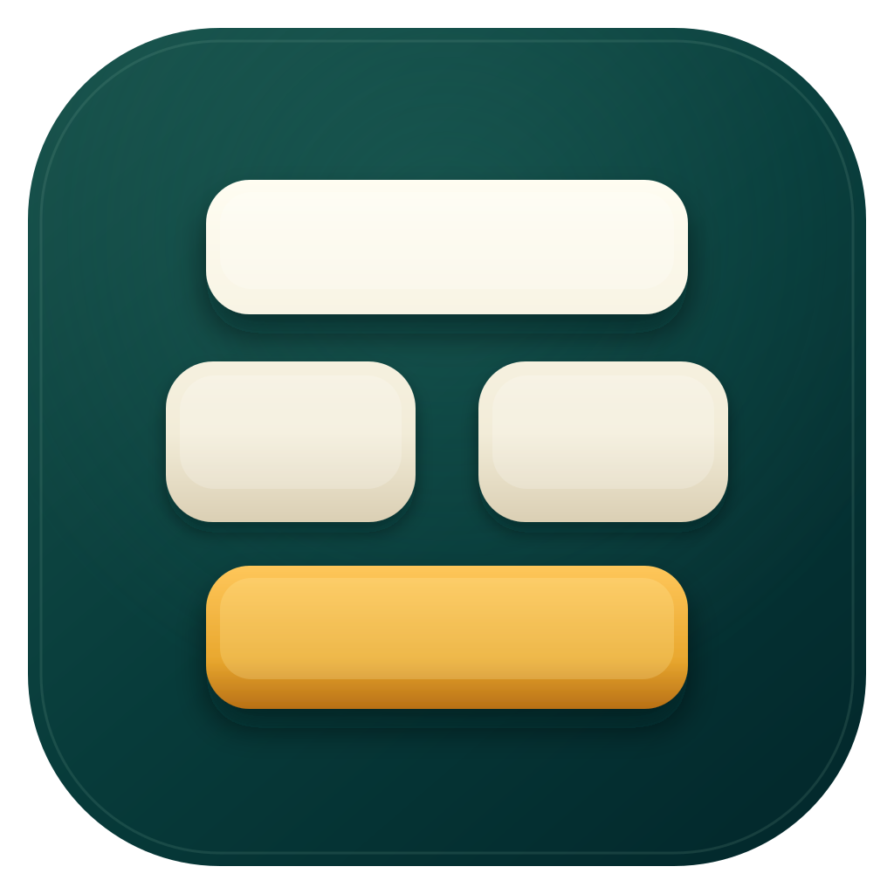

五笔优先，拼音兜底
熟悉的一至四码、简码与词组输入不变。忘记编码时，直接输入全拼继续找字。

Mac Wubi 86为 Apple Silicon 原生打造
一款真正属于 Mac 的五笔 86 输入法。纯 Swift、完全离线， 五笔优先，忘码时用本地拼音自然接上。
少一点打扰，多一点顺手
熟悉的一至四码、简码与词组输入不变。忘记编码时，直接输入全拼继续找字。
没有账户、云同步、在线候选或遥测。输入、词库和本地学习不离开你的 Mac。
Swift 与 InputMethodKit 原生实现，支持本地调频、用户词库、原子迁移与故障恢复。
wqvb
你好
五笔词组
sm
机 · 机会 · 机构
本地联想
shenm
什么
拼音预测
开始使用